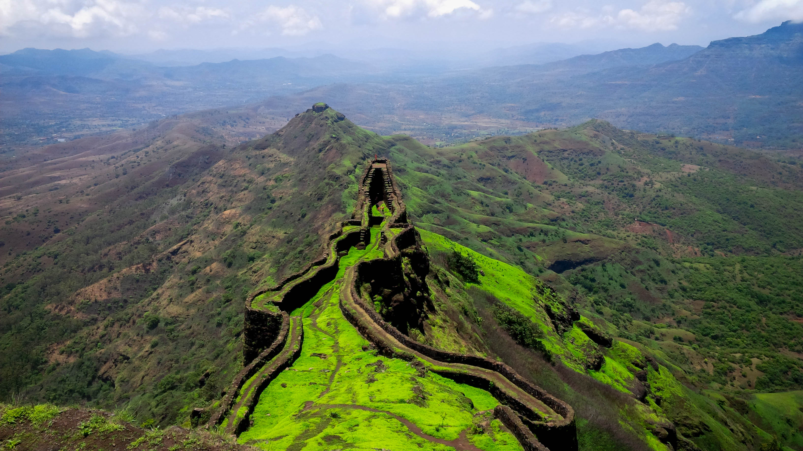
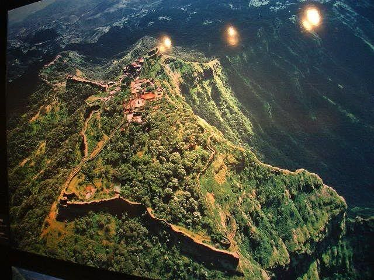
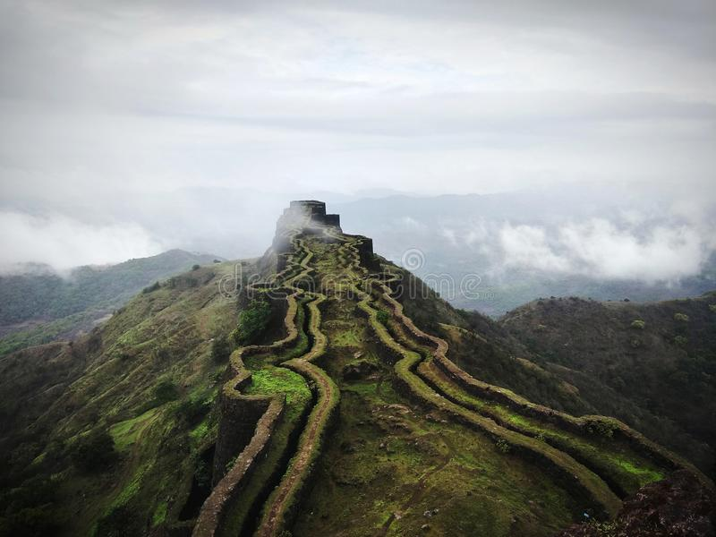

Torna fort

Torna Fort, also known as Prachandagad, is a large fort located in Pune district, in the Indian state of Maharashtra. It is historically significant because it was the first fort captured by Chatrapati Shivaji Maharaj in 1646, at the age of 16, forming the nucleus of the Maratha empire.view more
Sinhagad Fort

The Sinhagad (Lion's Fort) was strategically built to provide natural protection due to its very steep slopes. The walls and bastions were constructed only at key places. There are two gates to enter the fort, the Kalyan Darwaza and Pune Darwaza which are positioned at the south east and north-east ends respectively.view more
Rajgad Fort

The Rajgad Fort, Pune was built on the Murumbadevi Dongar Hills in the Sahyadris range. It was the first capital of Shivaji Maharaj and is also believed to be the place where Shivaji’s wife, Saibai, spent her last few days. view more
Tikona Fort

The fort is a trekking destination noted for the large doors, the temple of 'Trimbakeshwar Mahadev', a water tanks (seven water tanks) and some Satvahan caves. Trek organisers also commend the views of Pawna dam and the nearby forts of Tung, Lohagad and Visapur. There is good view of Pawana lake from the summit. view more
janjira fort

It is considered to be India's strongest marine fort. While some records state that it was built as early as 1100, more recent records show that Murud-Janjira was built at the end of the 17th century and has seen some historical figures. The fort remained unconquered till it became part of the Indian Territory in 1947. view more